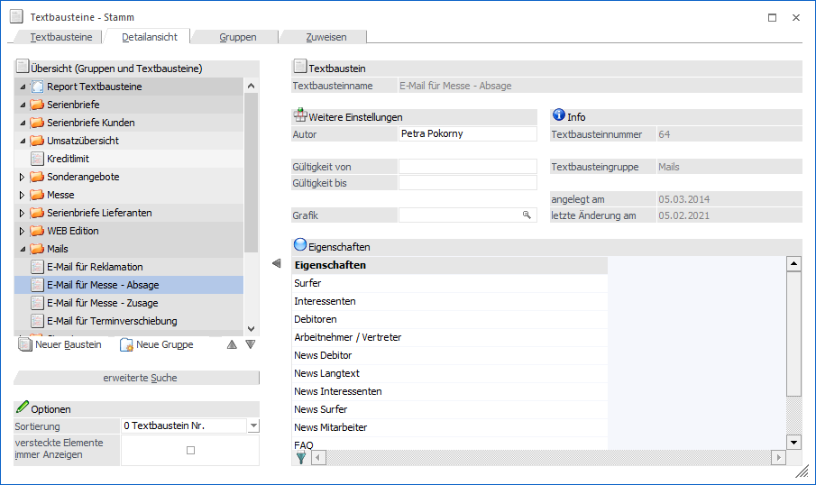
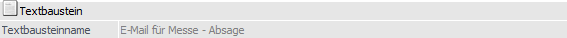
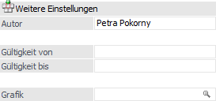
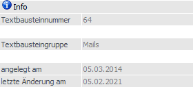
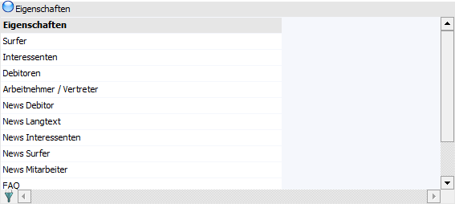
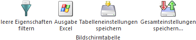

In dem Register "Detailansicht" werden weitere Informationen zu dem ausgewählten Textbaustein angezeigt, wobei auch manuelle Hinterlegungen möglich sind.

Das Fenster ist in zwei Bereiche unterteilt. Auf der linken Seite wird eine Übersicht mit allen bereits angelegten Textbausteinen dargestellt. Bis zur 8. Ebene der Textbausteingruppen gibt es immer zumindest den Button "Neuer Baustein" bzw. "Neue Gruppe".
Auf der rechten Seite können dann die spezifischen Eingabefelder ausgefüllt werden, wobei die Werte der rechten Seite immer mit dem aktuell ausgewählten Textbaustein der linken Seite aktualisiert wird.
Textbaustein

Ø Textbausteinname
An dieser Stelle wird der Name des ausgewählten Textbausteins angezeigt.
Weitere Einstellungen

Ø Autor
Hier kann der Verfasser des Textes eingetragen werden. Diese Information kann dann bei den diversen Ausdrucken mit angegeben werden.
Ø Gültigkeit von / bis
Hier kann ein Zeitraum eingegeben werden, in der der Textbaustein gültig sein soll. Diese Funktion wird speziell für Textbausteine benötigt, die in der WebEdition angezeigt werden sollen. Zur Anwendung kommt diese Funktion dann, wenn z.B. eine Mitteilung nur eine kurze Zeit über angezeigt werden soll.
Ø Grafik
Hier kann eine Grafik hinterlegt werden, die zusammen mit dem Textbaustein angezeigt werden kann. Durch Drücken der F9-Taste kann nach einer bereits vorhandenen Grafik gesucht werden.
Hinweis
Bei der Verwendung von Grafiken im Zusammenhang mit Serienbriefen aus dem WinLine Listgenerator ist die Variante mit der hinterlegten Grafik im Textbaustein zu wählen. Die Variante "Grafik einfügen" wird dabei nicht unterstützt.
Info

Ø Textbausteinnummer
Hier wird die interne Textbausteinnummer angezeigt.
Ø Textbausteingruppe
An dieser Stelle wird die Gruppe angezeigt, in welcher sich der ausgewählte Textbaustein befindet.
Ø angelegt am / letzte Änderung am
In diesen beiden Feldern wird das Datum der Erstanlage (wann wurde der Textbaustein angelegt) und das Datum der letzten Änderung angezeigt.
Eigenschaften

Über die Eigenschaften kann gesteuert werden, welche Textbausteine wo angezeigt werden sollen. Diese Eigenschaften sind wieder im Zusammenhang mit der WinLine WebEdition zu verwenden. Die Eigenschaft gibt dabei an, ob der Textbaustein überhaupt verwendet werden soll und definiert die Sortierreihenfolge der Textbausteine.
Tabellenbuttons

Ø leere Eigenschaften filtern
Durch Drücken dieses Buttons werden nur mehr jene Eigenschaften angezeigt, die auch mit einem Wert versehen sind. Der Button bleibt dabei gedrückt bis er erneut angewählt wird.
Ø Ausgabe Excel
Durch Anwahl des Buttons "Ausgabe Excel" wird der Inhalt der Tabelle nach Microsoft Excel übergeben.
Ø Tabelleneinstellungen speichern
Die Spalten einer Tabelle können grundsätzlich an beliebige Positionen verschoben, bzw. in der Breite entsprechend angepasst werden. Durch Anwahl des Buttons "Tabelleneinstellungen speichern" werden die Einstellungen benutzerspezifisch gespeichert und bei dem nächsten Aufruf des Programmpunktes wieder vorgeschlagen.
Ø Gesamteinstellungen speichern
Im Gegensatz zu "Tabelleneinstellungen speichern" können mit "Gesamteinstellungen speichern" mehrere Tabellenaufbauten gespeichert und nach Wunsch geladen werden. Zusätzlich werden Sonderfunktionen der Tabelle (z.B. "Spalte gruppieren") ebenfalls bei der Speicherung bedacht.